CORPORATE DAY 2008
The Corporate week celebrations started on 08th September with full vigor. The staff had geared up to make the 5th corporate day celebrations more fascinating than the previous ones. The very first day of celebrations started with the 'Surprise gifts' event. When the whistle was blown, the staff name had been picked up from a lot and cute gifts were awarded to the respective winners. This event continued for the whole day every one hour and gifts were distributed to many employees.
The second day was 'Dress code day', wherein all the teams had dressed up in a unique fashion based on the theme that they had chosen. It was a colorful day and every team had participated enthusiastically with full spirit.
The week long celebrations also saw some contributions towards noble cause which was known to be Charity day. The day witnessed staff contributing towards the well being of orphaned children.
The most important event in the corporate week celebrations was Presentation Day. One representative from each team presented a PowerPoint slide show on the achievements of the respective team, suggestions and future goals.
All the staff members assembled at the Office premises by 8 am on 13th September. Three buses were arranged for our trip to Queens Land, one of the biggest amusement parks in India. We reached the theme park by 11 am. The staff dispersed in groups to enjoy the variety of rides after having a welcome drink.
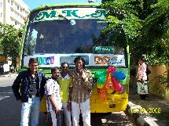 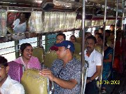
We were first greeted with a Free Fall tower. This is one of the most exciting rides where one could really feel a floating sensation while going up to a height of approximately 100 feet and coming down from that altitude.
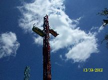 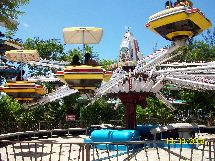 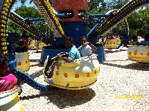
Alpen Blitz was another adventurous ride. This was the most scintillating ride and was totally amazing while this ride had rolled at 45 degree which made everyone feel weightless above the ground.
Cable car covered an expedition of a distance of nearly 1.5 km for 30 minutes. It was really funny to see most fearful faces during the cable car ride.
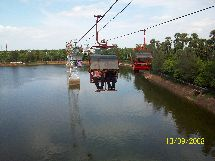 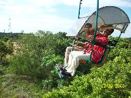 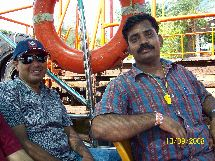
Himalayan water ride: This is one of Asia's largest water rides. This was considered to be one of the most thrilling rides of all since the ride was meant to exhibit unexpected turns and twists. There were many other water games attached to the pool.
After a thrilling time at the rides, the staff assembled at around 5 pm in an area exclusively allocated to us for tea and prize distribution. The results for the dress code and presentation events were announced by Suresh and Srikanth and prizes were awarded to the concerned teams.
Presentation
I Prize - Group IV
II Prize - Group II
III Prize - QC
Dress code
I prize - Training
II Prize - Artwork
III Prize – Software
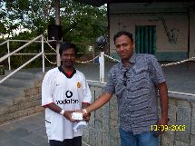 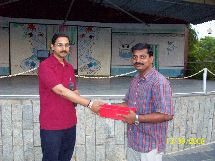
Nisha Rahul, our Operations Manager, announced the Employee of the Year, the most awaited award. Tikoji, Production Coordinator of Group 2, bagged the best employee award. He was given a cash prize of Rs.5000. The day ended with a vote of thanks by Chitra.
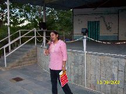 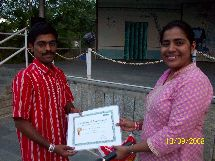 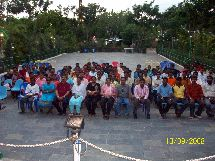 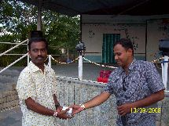
The trip was well organized by our HR Manager, Mrs. Vijayalakshmi. The entire Datapage team participated in the celebrations with full zeal and enthusiasm. On the whole it was an unforgettable event not just for the fun we had but also for the ecstatic celebrations that went on throughout the week. The memories of the week will certainly be treasured for a long time by everyone.
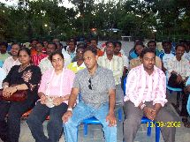 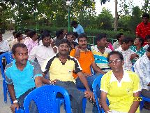